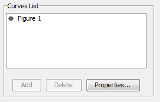
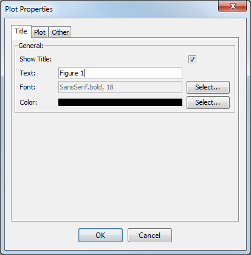
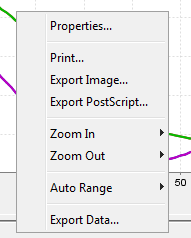
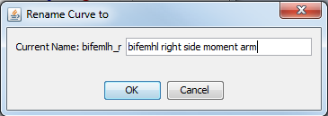
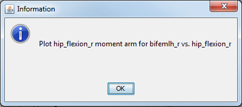

The topics covered in this section include:
The plot panel is the top part of the Plotter Window and includes the drawing area, title, legend, and axis labels shown in the section on the Plot Window. Customization of this area is done through a pop-up menu (context menu) that can be accessed by clicking the right mouse button anywhere in the plot panel. The context menu is shown in the figure below. The options available through the context menu are discussed in the following sections.
Summary Panel
The plot summary panel shows a list of the curves displayed in the plot panel, arranged in a tree structure. The buttons at the bottom of the panel control what appears in the plot panel:
|  | add: To add a curve to the display, specify the curve in the Curve Creation Panel and then press the Add button. The name of the curve will appear at the bottom of the Curves List. delete: To remove a curve from the display, left click on the name of the curve to be deleted. Then, press the Delete button. The name of the curve will be removed from the Curves List. If no curves are selected, the Delete button is disabled. edit plot properties: To control the properties of the plot panel (e.g., title, colors, axis names and scale), press the Properties… button at the bottom of the plot summary panel. The Plot Properties window (below) will appear. This is the same window used in the Function Editor section. You can also access the Plot Properties window by clicking the right mouse button in the plot panel and selecting Properties… from the drop down menu that appears.
 | Double click to edit any of the names in the Curves List to change the title of the figure or the curve legend. |
|
|---|
|  | - Use this panel to edit the title, x-axis or y-axis labels and scales.
|
The plot drop down menu is accessed by clicking the right mouse button on a given plot name in the plot summary panel. The plot names usually appear next to a folder icon. The following options are available from the plot drop down menu:
|  | For more information on properties see Plot Properties For more information on printing and exporting plots see Exporting and Printing Use the Zoom In and Zoom Out options to zoom on different areas of the plot. Auto Range formats the plot on a "best fit" set of axes.
|
|---|
The curve drop down menu is accessed by clicking the right mouse button on on a given curve name in the plot summary panel. The curve names usually appear in the list next to a gray dot. The following options are available from the curve drop down menu:
|  | Rename– Changes the name of the selected curve both in the plot summary panel and in the legend of the plot, which is shown in the plot panel. Picking this option brings up the dialog box on the left, which is populated with the current name of the selected curve. You can change the name to something more meaningful by typing a new name in the box and clicking the OK button.
| You can also Double Click on a curve name in the Curves List to edit. |
|
|---|
|  | - Info – Displays the dialog box on the left, with information about the data source and attributes. This helps distinguish curves from one another, since the auto-generated name for curves is generally not unique. For example, a plot of the muscle-tendon length of "rect_fem" and a tendon length of "rect_fem" will both appear in the plot summary panel as "rect_fem" by default. Using the Info option enables you to disambiguate which is which.
|
{kind=link}
{kind=link}
{kind=link}
{kind=link}
{kind=link}